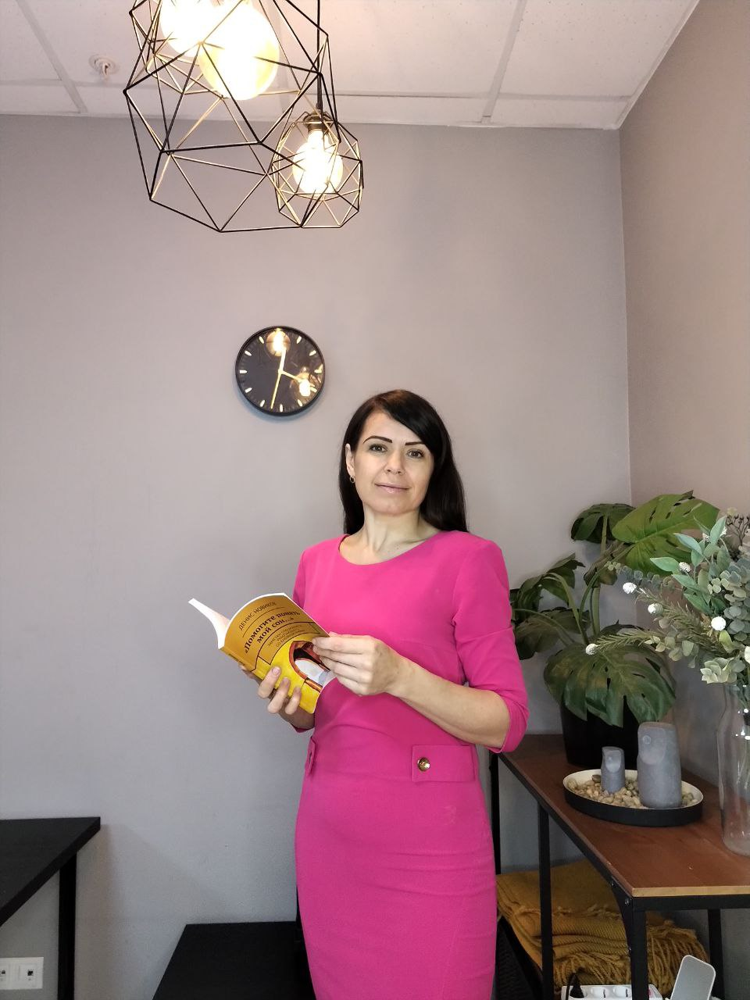

Подростку
Индивидуальные встречи, чтобы бережно разобраться с тем, что волнует.
Психолог для подростков и родителей · Краснодар
Первая встреча длится всего 20 минут. Без нотаций, оценок и давления. Просто поговорим.
Конфиденциально · Без давления · Онлайн и очно

● Встреча-знакомствоИногда трудно объяснить, что происходит
Форматы работы
На первой встрече не нужно «правильно» отвечать на вопросы. Можно просто познакомиться и понять, комфортно ли вам со мной.
Индивидуальные встречи, чтобы бережно разобраться с тем, что волнует.
Поддержка, когда в семье непростой период.
Разговор, в котором можно услышать друг друга.
Безопасное пространство для общения и опоры.
Групповая терапия
Группа до 6 человек своего возраста. Можно не рассказывать секреты и начать просто с присутствия.
Узнать о ближайшей группеКак всё проходит
Вы звоните или пишете, чтобы задать вопросы.
20 минут онлайн или в кабинете.
Подросток сам решает, хочет ли продолжать.
Индивидуально, с семьёй или в группе.
Екатерина Юрьевна
Я знаю, как непросто начать разговор с незнакомым взрослым — особенно если внутри много тревоги, злости, сомнений или усталости. На встречах можно говорить, молчать, рисовать, искать слова вместе — в темпе, который безопасен для вас.
Профиль специалиста на B17 →Стоимость
Консультация60 минут3 000 ₽
Семейная терапия60 минут4 500 ₽
Групповая терапия120 минут500–1 000 ₽
Диагностика30 минут1 500 ₽
Важные вопросы
Это нормально. Молчание тоже может быть частью разговора — психолог умеет бережно оставлять для него место.
Нет. Конфиденциальность — важная часть безопасного пространства.
Да, можно выбрать онлайн-встречу или очный формат в Краснодаре.
В группе действуют правила уважения и конфиденциальности.
Первый шаг
Позвоните или напишите — я отвечу на организационные вопросы и помогу понять, с чего начать.
Краснодар · ул. Красная, 139